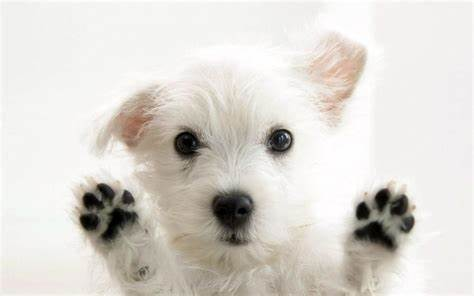

En el mundo entero existe el problema de abandono de animales, sin
embargo, en México se estima que existen 18 millones de perros y
gatos callejeros, aproximadamente el 70% de todos los animales de
compañía que viven en el país no tienen un humano responsable a
cargo y la pandemia provocada por el Covid-19 vino a empeorar el
asunto, pues albergues, refugios, santuarios y casas protectoras
de animales notificaron un incremento en la recepción de gatos y
perros abandonados porque su dueño falleció, porque no se pueden
hacer cargo de ellos, o simplemente por una falsa información
acerca del riesgo de contagio.

PERROS EN ADOPCIÓN
En la mayoría de los casos, adoptar significa darle una segunda
oportunidad a un animal que ha sufrido un proceso de abandono, y en
ocasiones maltrato.
GATOS EN ADOPCIÓN
Una de las razones para adoptar un gato es por su carácter. Los
felinos son juguetones y divertidos, sobre todo si son cachorros.
EVENTOS
Por el momento se han acabado, hasta proximo aviso. Estar al
pendiente atravez de esta página wed.
"CIUDAD DE LOS PERROS Y DE LOS GATOS"
El gobierno capitalino presentó el proyecto “Ciudad de los Perros y
de los Gatos”, que será un área especial dentro de la Brigada de
Vigilancia Animal, en donde estos animales de compañía podrán
recuperarse física y mentalmente para después ser adoptados.
¿Por qué adoptar un perro callejero?
Aprendes responsabilidad.
Rescatar a un perro callejero o adoptarlo en un refugio es una
decisión que no debe ser tomada a la ligera, y que te compromete por
el resto de la vida del animal. Es por eso que la adopción te
ayudará a sser más responsable, al tener bajo tu cuidado a otro ser
vivo que depende completamente de ti.
Salvas dos vidas.
Millones de perros son sacrificados en los refugios debido a la
sobrepoblación, mientras que aquellos que permanecen en las calles
llevan una vida de miedo, hambre, frío y maltratos físicos.
Mirarlos en ver reflejada la tristeza en sus caras. Adoptando a un
perro callejero estarás salvando su vida, ofreciéndole una segunda
oportunidad de tener un hogar y llevar una existencia digna y
feliz. Pero además, permites que el espacio libre lo pueda ocupar
un segundo perro, también a la espera de su familia perfecta.
Luchas contra la compra-venta de seres vivos.
Al comprar un perro en una tienda de mascotas o en un criadero
contribuyes con la cría, legal o no, de animales, y en la mayoría
de los casos esta se realiza en condiciones pésimas para los
pobres perros. A los criadores no les importa que las hembras den
a luz durante toda su vida, y muchas veces pasan hambre, frío,
sufren graves enfermedades y maltratos de todo tipo. Cuando
pienses en comprar un perro, recuerda todo esto y no apoyes el
abuso.
Mejoras tu salud.
Diversos estudios han demostrado el efecto positivo que trae tener
un perro sobre la salud de las personas. No solo está comprobado
que, si tienes niños, el contacto con un animal los ayudará a
crear las defensas necesarias contra las alergias, sino que además
cuidan tu salud cardiovascular, combaten el estrés y te relajan.
Ganas un amigo.
Si alguna vez te has sentido aislado, después de haber adoptado un
perro nunca volverás a sentirte solo. El amor del perro no tiene
fronteras, te acompañará en las buenas y en las malas, esperará
por ti en la puerta todos los días y se solidarizará con tus
emociones.